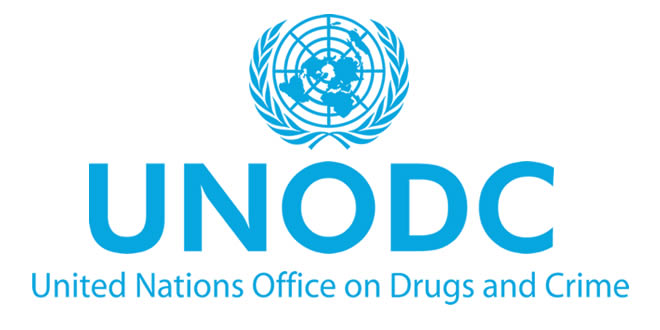
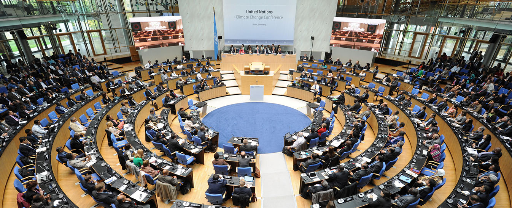
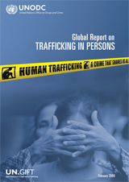

United Nations: The Convention Against Transnational Organized Crime
- The 2000 Palermo Protocol
In 2000 the UN signed the Convention Against Transnational Organized Crime (2000 Convention) which in its Article 1 states: "The purpose of this Convention is to promote cooperation to prevent and combat transnational organized crime more effectively" (UNODC, 2000).
Supplementing the 2000 Convention was, among two other protocols, the protocol to Prevent, Suppress, and Punish Trafficking in Persons, Especially Women and Children (2000 Palermo Protocol) which in Article 3 defines trafficking in persons as:
"the recruitment, transportation, transfer, harbouring or receipt of persons, by means of the threat or use of force or other forms of coercion, of abduction, of fraud, of deception, of the abuse of power or of a position of vulnerability or of the giving or receiving of payments or benefits to achieve the consent of a person having control over another person, for the purpose of exploitation. Exploitation shall include, at a minimum, the exploitation of the prostitution of others or other forms of sexual exploitation, forced labour or services, slavery or practices similar to slavery, servitude or the removal of organs" (UNODC, 2000).
Comparing the 2000 Palermo Protocol definition with the 1950 Convention definition the act "procures, entices or leads away […], keeps or manage […], knowingly lets or rents a building or other place" had been specified to mean "recruitment, transportation, transfer, harbouring or receipt".
"to procure is to is to invite or lead the woman or girl to become a prostitute; to entice is to take her away with or persuade her to follow; to lead astray is to remove her illegally from her surroundings. […] The offence is characterized by its continuity; the successive steps which it may entail take place either within the frontiers of one country alone or in several countries. There is no unity of place. This criminal traffic is international: the human body is traded in and treated as merchandize; the traffickers in it have their agencies, their depots, their correspondents, their export offices, and even their code" (Allain, 2017).

UNODC is a branch of the UN, mandated to assist Member States in their struggle against Human Trafficking
ACT :
Recruitment
Transportation
Transfer
Harbouring
Receipt of persons
+
MEAN :
Threat
Use of force
Coercion
Abduction
Fraud
Deception
Abuse of power or vulnerability
dummy
Giving payments or benefits to a person in control of the victim
+
PURPOSE :
Prostitution of others
Sexual exploitation
Forced labour
Slavery or similar practices
Removal of organs
Other types of exploitation
=
HUMAN TRAFFICKING

The means, which had been removed from the 1950 definition, was reinstated in the 2000 definition, but at the same time redefined as "the threat or use of force or other forms of coercion, of abduction, of fraud, of deception, of the abuse of power or of a position of vulnerability or of the giving or receiving of payments or benefits".
The purpose in the 1950 definition "exploits the prostitution" had been expanded to "exploitation of prostitution, or other forms of sexual exploitation, forced labour or services, slavery or practices similar to slavery, servitude or the removal of organs". This was incontestable the most significant development in the history of the trafficking conventions because of the severely increased scale of cases that complied with the new definition.
Including multiple types of exploitation which, not to the same degree as involuntary prostitution, are comprised of women and girls, must allegedly have led to moderations in the definition of trafficking victims. Article 2(a) defines the purpose of the 2000 Palermo Protocol as follows: "To prevent and combat trafficking in persons, paying particular attention to women and children" (UNODC, 2000).
Even on paper Article 2(a) appears ambiguous and the question is how this would be enforced practically? How would a State implement or alter a legal framework to "pay particular attention to women and children?". How would a court or prosecutor in a specific human trafficking case "pay particular attention to women and children"? This is not to say that there wasn't overtly issues with the transition from theory into practice in its predecessors, but they seemed to have become even more extensive with the changes undertaken in the 2000 Palermo Protocol.

UNODC conduct research and analytical work to increase knowledge and understanding of Human Trafficking
"the recruitment, transportation, transfer, harbouring or receipt of persons, by means of the threat or use of force or other forms of coercion, of abduction, of fraud, of deception, of the abuse of power or of a position of vulnerability or of the giving or receiving of payments or benefits to achieve the consent of a person having control over another person, for the purpose of exploitation. Exploitation shall include, at a minimum, the exploitation of the prostitution of others or other forms of sexual exploitation, forced labour or services, slavery or practices similar to slavery, servitude or the removal of organs" (UNODC, 2000).
Another result of the expansion of the purpose, is that the 2000 Palermo Protocol arguably absorbed other international conventions such as the 1926 Slavery Convention to Suppress the Slave Trade and Slavery and the 1930 Forced Labour Convention. The 2000 Palermo Protocol seemed to be lacking clear definitions on what exactly was meant by "forced labour or slavery or practices similar to slavery" and "servitude" etc.
Regardless of the practical implications and the underlying motivations behind this development, the fact remains that traffic in person was, at its incubation, created as legal instrument aiming to prevent the trade in young girls and women forced into involuntary prostitution. Over time it evolved into a legal instrument aiming to prevent the trade in persons, especially women and children, forced into a wide range of different types of exploitation. Article 3 in the 2000 Palermo Protocol has become the standard definition of how the concept of human trafficking is understood in a modern-day context.